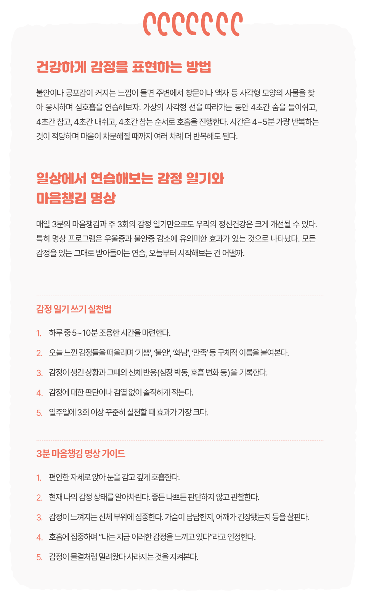

글. 편집실
참고. Verywell Mind Review Board, 가톨릭대학교 의과대학 등 다수
매일 아침 출근길, 우리는 얼마나 많은 감정을 삼키고 있을까. 속상한 일이
있어도 거울 앞에서 억지로 미소를 만들고, 지친 몸을 이끌고도 “오늘도
감사한 하루”라는 문구를 SNS에 올린다. 회의 시간에 솔직한 의견은
목구멍까지 차올랐다가 삼켜지고, 퇴근 후에는 “요즘 정말 좋아”라는
거짓말이 흘러나온다. 집에 돌아와서야 하루 종일 쌓인 감정의 무게를
느낀다.
언제부터인가 부정적 감정은 빨리 털어내야 할 먼지가
되어버렸다. 하지만 정말 그래야만 할까? 감정일기와 마음챙김 명상은
억눌린 감정에 귀 기울이는 가장 단순하면서도 강력한 도구다. 하루 몇
분의 투자로 ‘나답게’ 살아가는 첫걸음을 시작해보자.
‘독성 긍정성(toxic positivity)’이란 표현을 처음 사용한 개인 성장
전문가 체이스 힐(Chase Hill)은 “일부 대중적인 긍정적 문화는 실제로
정서적 건강에 매우 해롭다”고 지적한다. 우리는 종종 슬픔, 분노, 불안과
같은 감정은 빨리 해소하고 긍정적인 상태로 돌아가야 한다고 생각한다.
이것이 바로 ‘독성 긍정’의 함정이다. 체이스 힐은 “부정적인 감정을
억지로 억누르면 언젠가는 침묵 속에 터져 나올 것”이며, 이는 정신건강에
악영향을 미친다고 주장한다. 모든 감정은 나름의 이유와 의미가 있으며,
이를 인정하고 표현하는 것이 진정한 정신건강의 시작이다.
감정 일기는 하루 5~10분, 자신의 진짜 감정을 꾸밈 없이 기록하는
자기돌봄 방법이다. 트라우마 치료 전문기관 마음성장센터의 연구에 따르면
감정 일기 쓰기는 면역체계 기능 향상, 만성질환 환자의 건강 증진,
스트레스 감소 효과가 있는 것으로 나타났다. 특히 심리적 외상에 대해
글로 쓰거나 말로 표현하는 과정에서 즉각적인 스트레스 감소 효과가
나타난다. 또한 감정 일기를 쓰는 것은 천식 환자의 심폐기능 향상과
관절염 환자의 통증 완화에도 기여한다는 연구 결과도 있다.
마음챙김 명상은 현재의 순간에 집중하며 자신의 감정 상태를 있는 그대로
관찰하는 기술이다. 마음챙김의 실용성은 1970년 이후 과학계의 주목을
받기 시작했으며, 특히 스트레스 관리 기능이 가장 먼저 연구되었다.
2014년 JAMA 의학저널의 메타분석 연구에서는 마음챙김 명상이 불안,
우울증, 통증을 감소시키는 데 효과적인 것으로 나타났다. 또한 체중 관리,
정신 질환, 심장 질환, 수면 장애 등 다양한 건강 문제에도 유익한 효과가
있는 것으로 확인되었다.
마음챙김 명상 연구자들은 “마음챙김은 생각, 감정, 행동을 스스로
인식하되 각 사항에 매몰되거나 사로잡히지 않은 상태”라고 정의한다.
이러한 상태에서는 “감정이 나를 지배하는 것이 아니라, 내가 감정을
바라보게 된다”는 자각이 생긴다. 독성 긍정의 함정에서 벗어나 자신의
모든 감정과 친해지는 첫걸음인 셈이다.
